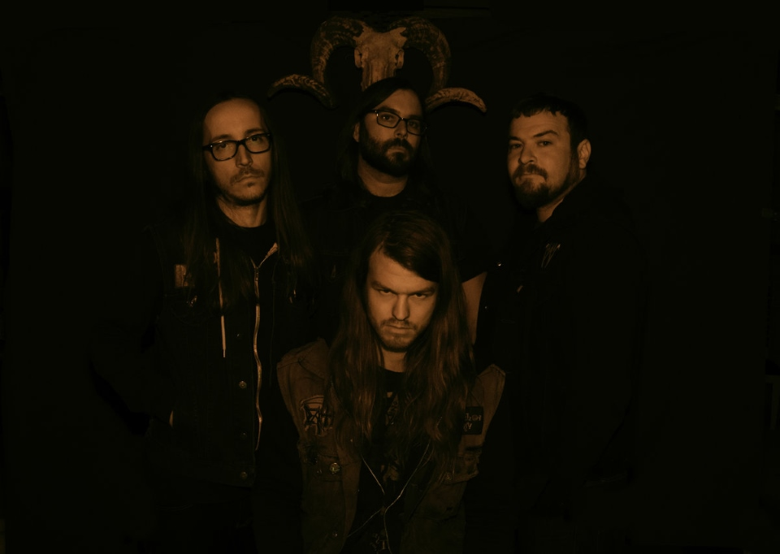

 Cough é uma banda americana de stoner/sludge/doom metal de Richmond, Virginia. Formado em 2005, atrairia influências de bandas de doom metal
de várias gerações ao lado de bandas de sludge e black metal inicial, como Bathory. A banda começaria inicialmente com um único vocalista em Chris Kirby, mas após sua saída em 2008,
veria os membros principais David Cisco e Parker Chandler assumindo os vocais, ambos com estilos vocais muito diferentes.
Ao lançar seu álbum de estreia em 2008, Cough assinou com a Relapse para dois álbuns aclamados pela crítica em 2010, Ritual Abuse e Still They Pray, de 2016, respectivamente.
Até o momento, a banda lançou três álbuns entre outros lançamentos e excursionou pela América do Norte, Europa e Austrália.
Ritual Abuse
Ritual Abuse lançado em 1 de novembro de 2010, recebendo mais elogios da crítica de nomes como Blabbermouth, Your Last Rites e Austin Chronicle.
Para divulgar o álbum, Cough já havia feito uma turnê na América do Norte ao longo de 2010 com um segundo guitarrista em Brandon Marcey. A banda se apresentou
na Europa pela primeira vez naquela primavera, em turnê por sete semanas e aparecendo na edição de 2011 do Roadburn Festival. Outras turnês seguiriam na América do Norte (incluindo
uma aparição no Boomslang Festival) seguidas pela primeira turnê da banda na Austrália como parte do Doomsday Festival. No ano seguinte, Cough faria uma turnê ao lado de Weedeater e
ASG enquanto aparecia em festivais como Maryland Deathfest e Chaos in Tejas.
Junto com um retorno à Europa em 2013 (Ao lado de Witch Mountain) que incluiria aparições no Roadburn, Desertfest London, DesertFest Berlin, Terneuzen Stonerfest e Heavy Days in
Doomtown, Cough lançaria um LP dividido com Windhand intitulado Reflection of the Negative em 16 de abril de 2013. A divisão receberia elogios significativos, incluindo uma
revisão de 7,9/10 via Pitchfork que citaria Reflection of The Negative como "um EP de divisão imersivo que serve como um aviso importante para Richmond como um centro de metal nos
Estados Unidos ". The Sludgelord, The Sleeping Shaman,Sea of Tranquility e Echoes and Dust estariam entre várias outras publicações para dar uma recepção
positiva da separação.
Still They Pray
Cough tiraria uma folga da turnê pelos próximos dois anos para se concentrar em escrever um novo álbum de estúdio, "Still They Pray" eventualmente gravando em setembro de 2015 em um rolo na garagem
do baterista Joseph Arcaro, seguido de masterização no The Boiler Room. Produzido por Jus Oborn (Electric Wizard), o álbum seria lançado em 3 de junho de 2016 com elogios da
crítica de várias publicações, como Metal Injection, Invisible Oranges, The Austin Chronicle, Treble Zine, The Sludgelord e Pitchfork só para citar
alguns. Consequence of Sound, em particular, descreveria Still They Pray como "um disco difícil e exaustivo, melhor abordado como um todo conceitual, em vez de uma coleção de faixas
díspares. A falta de variação sonora é uma escolha artística, construindo uma atmosfera que é transportante e profundamente comovente. , mas não para os hesitantes. Os vocais são
ásperos, as guitarras mais ásperas, o drone repetitivo, mas Cough evoca uma ressonância emocional que chega ao cerne do motivo pelo qual criamos arte. Esta é a música com a qual
você pode viver e conviver, para evitar fora de sua própria escuridão iminente... ou resigne-se a ela.".
Para apoiar Still They Pray Cough faria uma extensa turnê, agora como um quinteto com um organista ao vivo conhecido como JK. Cough se apresentaria no Psycho Las Vegas e seguiria
com uma turnê pela Europa ao lado de Elder, aparecendo em eventos como Up in Smoke, Desertfest Athens e Desertfest Belgium. No ano seguinte, Cough faria uma turnê ao lado de
Windhand na Austrália e Sinister Haze na Europa. Em 2019, a gravadora lituana Creep Purple lançaria um álbum ao vivo intitulado More Dead Than Live.